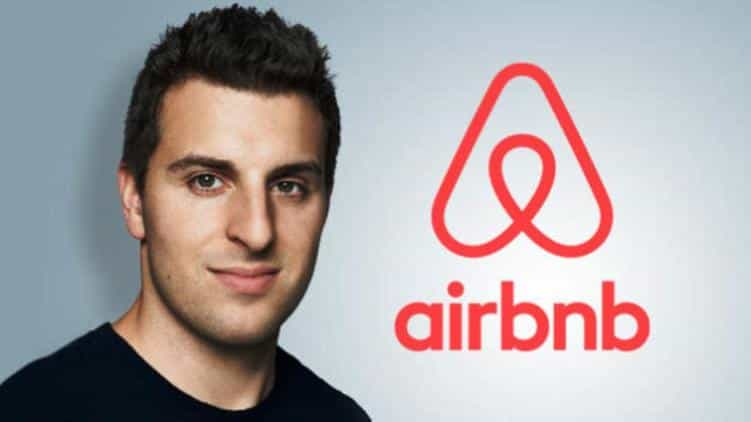

< < < Back
Airbnb Goes Full SJW And Demands Users Host Deviants Of Every Kind In Their Home – Return Of Kings
You commit to treat everyone–regardless of race, religion, national origin, ethnicity, disability, sex, gender identity, sexual orientation or age–with respect, and without judgment or bias.
— Airbnb’s new SJW diktat
Short-term residential accommodation network Airbnb is forcing its providers to adhere to a new “nondiscrimination” policy, including a requirement to accept transgender people. The policy takes effect on November 1 and is accompanied by a slew of other recent or impending changes, which Airbnb says are designed to make its “community” more “inclusive.” Those who refuse to accept the main nondiscrimination policy will barred from listing their properties with Airbnb.
The major problem with Airbnb’s new nondiscrimination provisions is that they really just represent an euphemism—bowing to a customer’s feelings, rather than proven discrimination. The overall framework of the company’s policy alterations assumes that those accommodation providers accused of discrimination are actually guilty of it. This rush to judgment gives little or no recourse to those who depend on Airbnb to generate an income. It also makes it very easy for certain protected groups, most notably transgender people, to falsely or very loosely claim discrimination, when, in fact, the issue is likely to be the prospective guest’s temperament or perceived reliability in respecting the property.
Secondly, the policy changes ignore the unique nature of sharing economy sites like Airbnb. Accommodation providers are often accepting guests into their literal homes, or their sole investment property. Whereas hotels have round-the-clock staff, including security, Airbnb properties are much more informal and unsupervised. Providers therefore have good reasons to be very judicious about who exactly they let into their residences.
Airbnb’s “Open Doors” policy treats any discrimination complaint as gospel truth

Brian Chesky must’ve drank the same poisoned water as fellow tech SJW Jack Dorsey of Twitter.
We’ll be implementing a new policy called Open Doors. Starting October 1st, if a Guest anywhere in the world feels like they have been discriminated against in violation of our policy – in trying to book a listing, having a booking canceled, or in any other interaction with a host – we will find that Guest a similar place to stay if one is available on Airbnb, or if not, we will find them an alternative accommodation elsewhere.
— Brian Chesky, Airbnb CEO and co-founder
In addition to dictating what kinds of guests can enter their providers’ properties, another one of Airbnb’s new policies, which is already in force, treats those accused of discrimination as immediately guilty. Rather than determining whether discrimination has occurred, Airbnb has made it clear that it will bend over backwards to find those claiming discrimination other accommodation within its network or, more strangely still, alternative accommodation outside its network. The second arm of this “discrimination response” will become very interesting indeed should privately-owned Airbnb decide to go public. It is hard to see how shareholders would acquiesce to a company offering customers third-party accommodation options that effectively deprive it of money.
Airbnb is simply trying to have its cake and eat it, too. On the one hand, it wants to create as wide a market for itself as possible, now having providers offering 2,000,000 listings in 34,000 cities around the world. On the other hand, however, it wants to assume total control for determining what is and what is not discrimination, despite having no ability to verify pretty much any of the accusations. Airbnb are mere gatekeepers, providing a rudimentary service that makes its bucks by the sheer volume of providers. These same providers should not suffer because of the company’s “thinly-spread” business model.
Allegations of discrimination have been scant at best
We don’t question the right of people to be selective about new housemates, so why not Airbnb providers and their guests?
Various news articles reporting on the shift in Airbnb policies have only been able to point to isolated instances of even alleged, let alone proven discrimination. The best that SJW enablers can offer is a deeply flawed Harvard study, which claimed that prospective guests with stereotypical African-American names like LaToya and Darnell were 16 percent less likely to be approved by the company’s accommodation providers. Considering that a guest’s profile provides a lot more information than just their name, the Harvard “research” leaves a lot to be desired.
Moreover, names like “Cletus” and “Mary-Sue” would arguably garner even less approvals. Both these “white” names and the aforementioned African-American names usually dovetail with some of America’s least sophisticated and worldly types, the exact kinds of people least likely to be allowed into someone’s home. It has precious little to do with race and almost everything to do with run-of-the-mill decisions about how to safeguard one’s own property by entrusting it to the right people. Such decisions are routinely accepted when new housemates are sought, so why not with Airbnb?
Has Airbnb signed its own execution order?
https://twitter.com/rooshv/status/792404359262965760
Just as Roosh swears by Booking.com, there are plenty of other options you can take in avoiding Airbnb from now on. Like Twitter, the company is quickly falling under the spell of the SJW crowd. It seems certain that, minus a backtrack, Airbnb and its reputation will follow Jack Dorsey’s company into the abyss. Unlike Twitter, though, Airbnb may never make the jump to publicly-listed company.
We live in very sad times for freedom. But there’s one freedom we can all exercise now–staying the hell away from Airbnb and its SJW madness.
Read More: Should There Be Laws Against Platform Businesses Like Airbnb, Fiverr, And Uber?